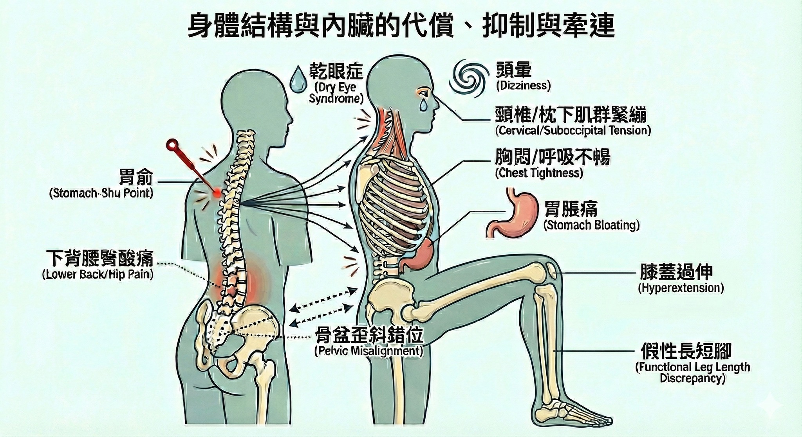

身體結構與內臟的代償、抑制與牽連：從膝蓋過伸到難解的乾眼症
身體結構與內臟的代償、抑制與牽連：從膝蓋過伸到難解的乾眼症
【診間紀錄】
近期門診來了症狀雷同的就診患者，其中最常見的主訴為 #膝蓋疼痛。
多數患者表示站立時膝蓋緊繃，甚至有些人有明顯的過度伸直（Hyperextension）現象，且自覺雙側足底著地感不平衡，體感上有明顯的 #長短腳 （右長左短）感受。其行走耐力明顯下降，短距離跑步或短時間活動便容易誘發 #膝痛 。
除了下肢的生物力學問題，常見下背與腰臀區域亦呈現常態性酸痛；即便在非急性疼痛期間，該區域深層的緊繃感與擠壓感仍持續存在。
深入問診後，發現臨床表現比單純的骨骼肌肉問題更為複雜：
這類型患者長期受 #胃脹痛 等腸胃功能障礙困擾，症狀嚴重時伴隨 #胸悶 、呼吸不暢及偶發性 #頭暈 。在情緒與壓力調節方面，多數因生活節奏快速、工作壓力較大，造成生理上的不適感常與高壓狀態連動。
此外，也常見合併有 #眼乾澀、#視野模糊 等類似「乾眼症」，即便曾在坊間接受民俗結構調理，但往往在數週後症狀便回復原狀，陷入反覆發作的循環。
面對這類包含膝痛、腰酸、胃脹、胸悶、乾眼及情緒壓力等多重主訴，臨床上首要任務是抽絲剝繭， #重新建立診斷邏輯 ，避免被分散的症狀表象混淆方向。
診斷思路：濾除雜訊，直指核心
#脈診 是臨床診療的導航。但在判讀複合式資訊時，必須先考量結構層面的影響，濾除「肌筋膜高張力」對脈管造成的物理性干擾，才能精確捕捉氣血陰陽的真實原貌。
診脈常見左脈關尺旋緊，右關滑數且指下觸感糾結。此脈象提示中焦脾胃氣機阻滯，且有痰濕化熱之象，但必須結合腰背部的結構張力一同解讀。
觸診檢查骨盆帶時，發現明顯的骨骼與周邊組織張力異常。結合問診資訊，整體的病理圖像清晰浮現：
下背腰臀的酸痛緊繃，與腹部的胃脹、胸悶及頭暈存在強烈的 #牽連 關係：即「內臟-軀體反射（Viscerosomatic Reflex）」。腰臀症狀與骨盆帶的骨骼錯位、軟組織張力失衡有著明確的力學 #抑制 與 #代償 因果。
推測核心問題在於：骨盆歪斜錯位導致身體回正能力失能，下背腰臀受抑制，引發功能性長短腳，迫使右膝產生過度伸直的代償。同時，長期的圓肩駝背與胸椎關節活動度受限（Hypomobility），不僅壓迫心肺空間，更加重了高位頸椎與枕下肌群的代償性緊繃——這極可能是干擾頭面部血液循環與神經傳導，導致眼睛乾澀、眼乾等症狀久治不癒的關鍵原因。
治療策略：精準打擊，結構重塑
診斷明確後，治療策略直擊問題核心（Key Lesion）。
第一式：肌筋膜脈學解鎖——胃俞
取肌筋膜脈學應用之胃俞穴，定位反應點後進行針刺。治療過程中，患者感受到明顯的酸脹感與傳導感。拔針後，患者反饋胃部脹滿感顯著消退，且胸口呼吸阻力大幅降低。這證實了釋放胸腰交界處的張力，能直接解除內臟受壓的狀態。
第二式：傷科結構重塑——骨盆歸位徒手賦能
接續進行徒手治療，校正歪斜的骨盆，旨在恢復骨盆帶之力學樞紐功能。透過微調髂骨與骶骨的相對位置、釋放周邊組織張力、解開力學卡頓，重啟 #骨盆自我回正 機制。當骨盆水平恢復，原先假性的長短腳自然改善，右膝為了代償而產生的過度伸直也隨之緩解。
治療後多數患者下床嘗試活動，表示活動度有所提升，且整體身體感受變得較為輕鬆靈活。
後續計畫
這類型的狀況，通常需要接續療程，近一步聚焦於枕下肌群（Suboccipital muscles）與胸鎖乳突肌（SCM）的處理。
目標是釋放寰枕關節（C0-C1）的深層張力，改善椎動脈供血並調節迷走神經張力。透過遠端拆解，釋放顱底與高位頸椎的壓力，以期進一步改善對視神經血管的壓迫及頭暈症狀。
回顧近日類似個案，患者們的「類乾眼症」等症狀之所以反覆發作，推測是因為過往治療僅處理了「末梢」，而非「源頭」。
當胸廓與頸椎因骨盆失衡而被鎖死，向上的氣血通道受阻，眼睛自然乾澀；同理，所謂的「情緒困擾」，在排除心因性因素後，很多時候是身體長期處於慢性疼痛與內臟功能失調（如胃脹、胸悶）下的生理耗竭。
臨床上，「身心」從來不是二分法。當結構（骨盆、脊椎）歸位，內臟（胃、心肺）減壓，長期累積的鬱氣往往能隨之消散。唯有跳脫局部，看見結構與內臟錯綜複雜的連動網，才能在繁雜的主訴中，為患者找到通往健康的捷徑。
———
相關實證研究與文獻參考 (References)：
1. 關於頸椎失能與乾眼/視覺疲勞 (Cervicogenic Dry Eye & Visual Disturbance)
• 論點：研究指出高位頸椎（C1-C2）功能障礙與頭部前傾姿勢（FHP），會透過三叉神經頸核（Trigeminocervical Complex）干擾眼部自主神經，導致眼部血流與淚液分泌異常。
• Reference: Dantas, F. F., et al. (2018). The relationship between head and neck posture and dry eye disease. Journal of Bodywork and Movement Therapies, 22(4), 856.
• Reference: Mingels, S., et al. (2016). Is there a relationship between forward head posture and temporomandibular disorders? Journal of Oral Rehabilitation, 43(11), 871-881.
2. 關於內臟-體軀反射與背部治療 (Viscerosomatic Reflex)
• 論點：胃腸道功能障礙（如消化不良）常在胸椎 T5-T9 區域產生反射性的肌肉高張力與壓痛點；反之，治療該節段可改善內臟症狀。
• Reference: Beal, M. C. (1985). Viscerosomatic reflexes: A review. The Journal of the American Osteopathic Association, 85(12), 786-801.
• Reference: Giamberardino, M. A., et al. (2005). Referred muscle pain in visceral disorders. Current Pain and Headache Reports, 9(4), 262-269.
3. 關於骨盆傾斜與膝蓋過伸 (Pelvic Tilt & Genu Recurvatum)
• 論點： 骨盆的前傾或旋轉會改變股骨的力學軸線，導致膝關節在站立期必須透過「鎖死（Locking/Hyperextension）」來維持重心穩定。
• Reference: Khamis, S., & Yizhar, Z. (2007). Effect of feet hyperpronation on pelvic alignment in a standing position. Gait & Posture, 25(1), 127-134.
4. 關於徒手治療對自律神經與情緒的影響
• 論點： 針對脊椎與肌筋膜的治療能有效調節迷走神經活性，提升心率變異度（HRV），進而緩解伴隨慢性疼痛的焦慮與鬱悶感。
• Reference: Buttagat, V., et al. (2011). The immediate effects of traditional Thai massage on heart rate variability... in patients with back pain. Journal of Bodywork and Movement Therapies, 15(1), 15-23.
(免責聲明：本文案例僅供衛教分享，已移除相關識別化資訊，並重新改寫，每位個案身體狀況不同，實際治療計畫需由專業醫師評估後執行。)
太初中醫診所 東門中醫
中醫師 黃彥鈞
